Wow, 38k followers! Thanks, you crazy kids!
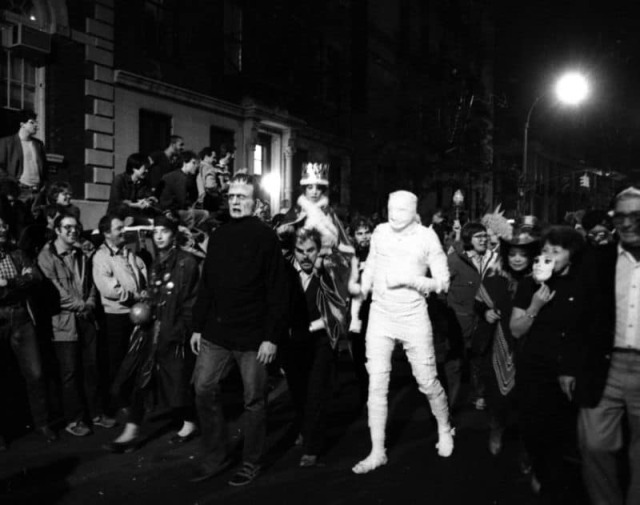
Halloween in Greenwich Village, 1982
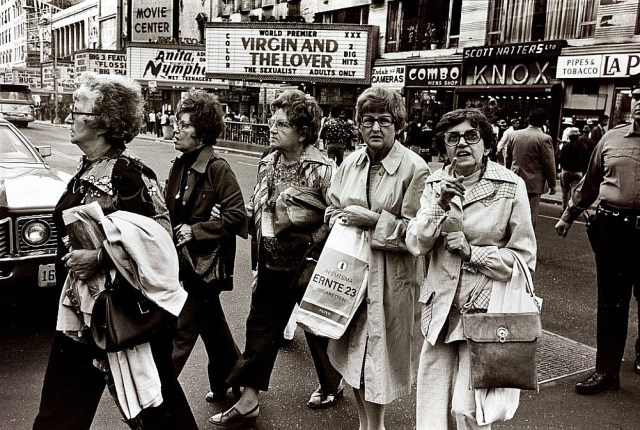
They gave “Virgin and the Lover” four and a half stars.
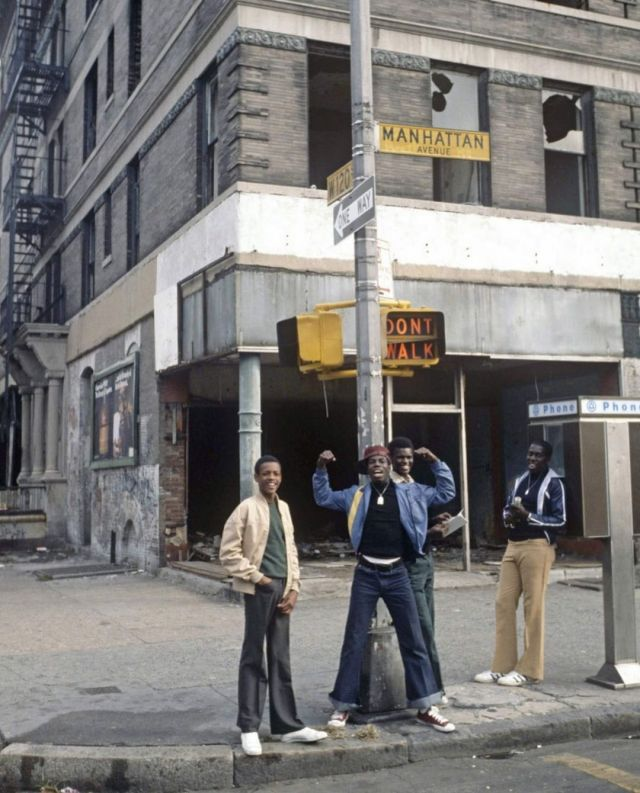
Princes of 120th Street, 1977
juncst :
Sade in 1983 by Janette Beckman
robertalanclayton :
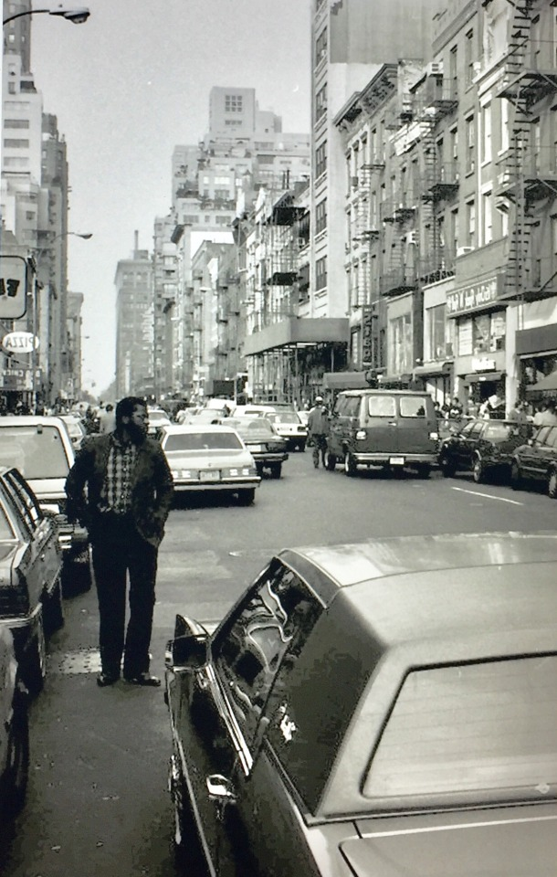
NYC, 1984, RA Clayton
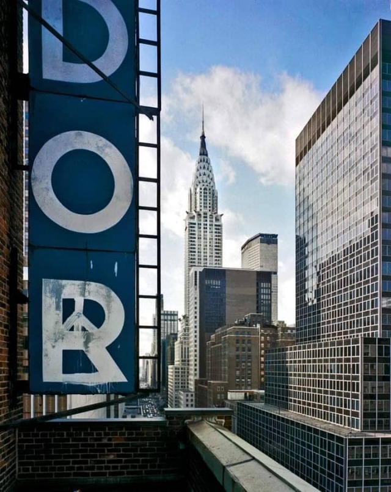
Tudor Hotel, 304 E. 42nd St. Chrysler Building in the background. 1984.
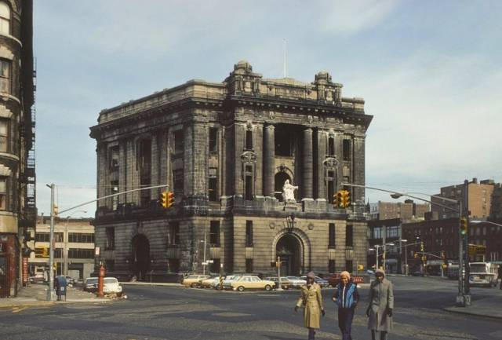
161st and 3rd Ave, Bronx, 1980
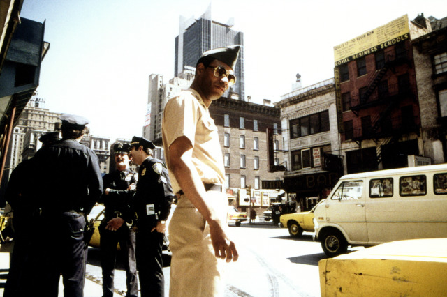
Authority figures near Port Authority, 42nd and 8th, 1978
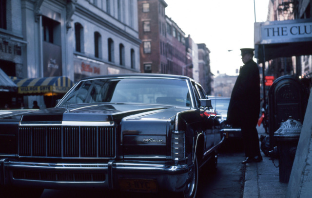
The Club, across from the Village Gate, 1978
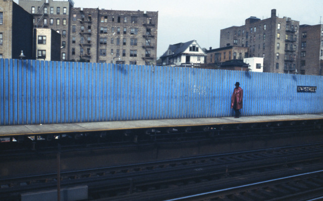
174th Street train station, 1978
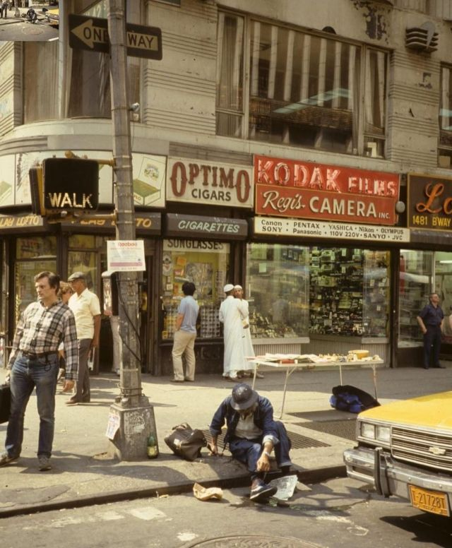
7th Ave and 42nd St, 1986
railwayhistorical :
Myrtle Avenue: Farmacia, General View
Here’s another shot taken at 519 Myrtle Avenue in Brooklyn. We are adjacent to the Clinton Hill neighborhood—between Pratt Institute and the Navy Yard here.
One image by Richard Koenig; taken in the fall of 1981.
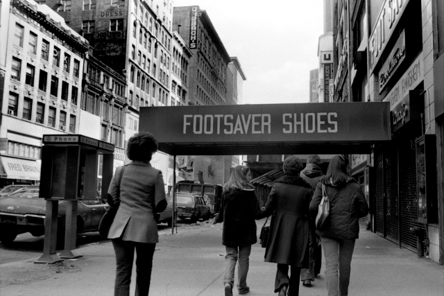
Footsaver Shoes, 34th St, 1970s
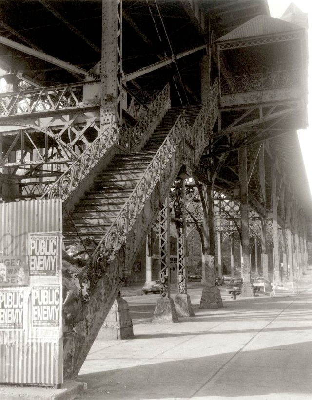
155th Street and Frederick Douglass Boulevard, 1990
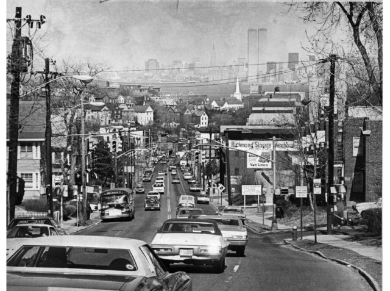
Manhattan as seen from Staten Island, 1974
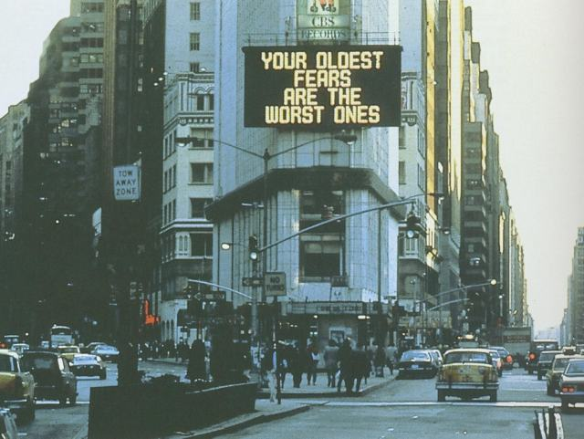
Your oldest fears are the worst ones.
Times Square, 1986
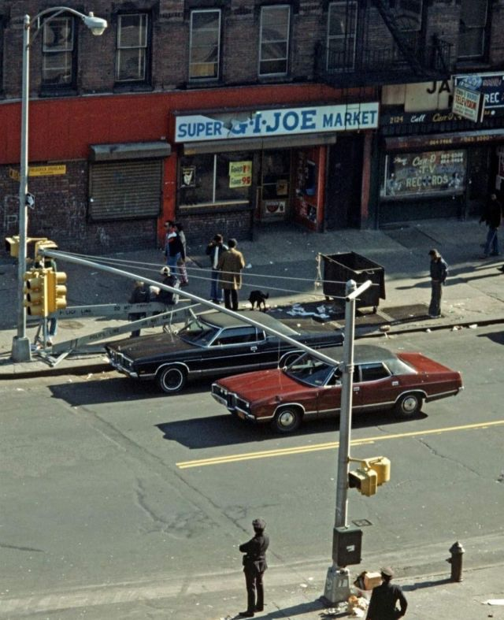
Frederick Douglass Boulevard at 115th Street, 1970s
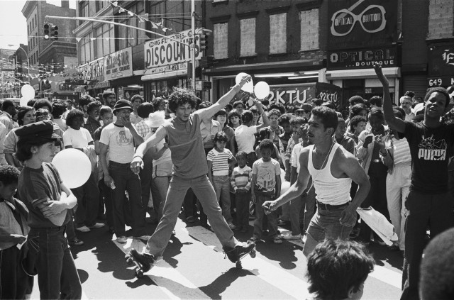
Street festival, 149th St. and 3rd Ave in the Bronx. 1981.
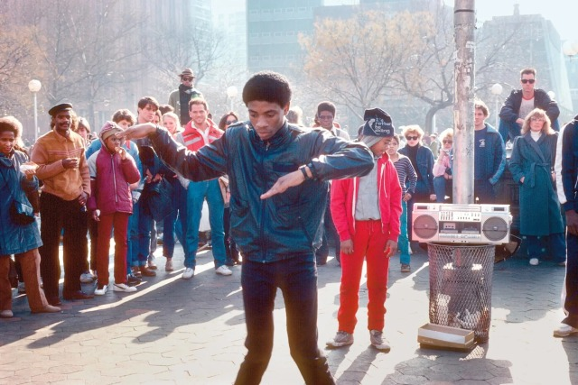
Break dancers in Washington Square Park, circa 1984
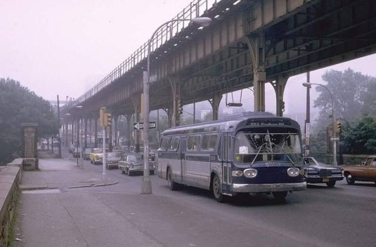
Gun Hill Road in the Bronx, 1970s
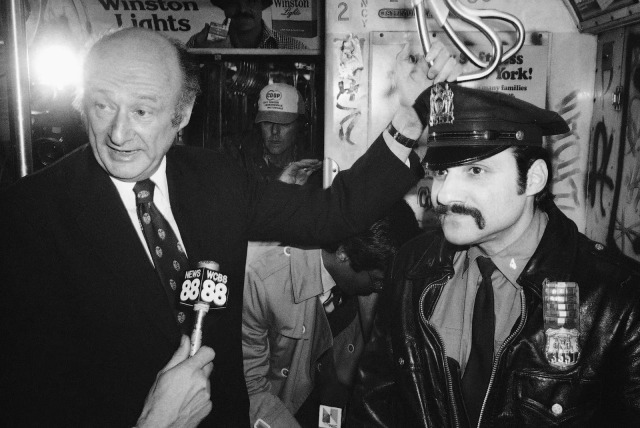
Ed Koch waging a war on something or other, 1979
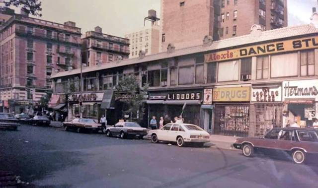
87th and Broadway, looking downtown, 1985.
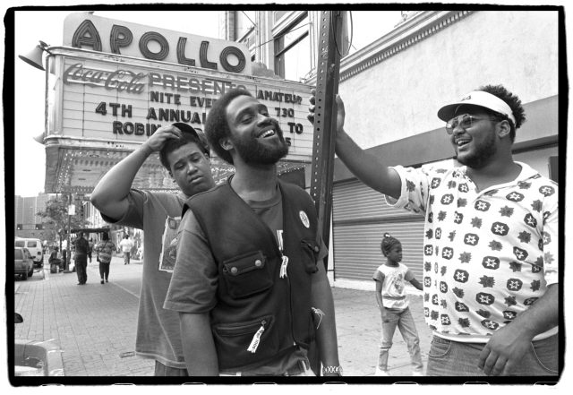
De La Soul outside The Apollo in 1993
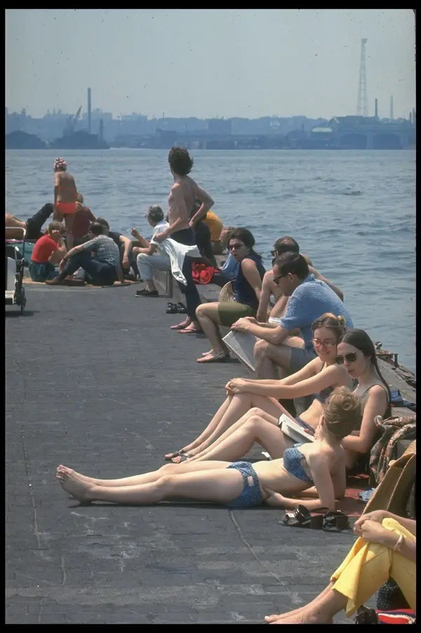
The Hudson smells great. 1969.
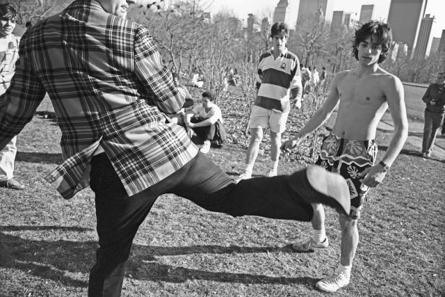
Either hacky sack, or really terrible dancing. 1986, Central Park.
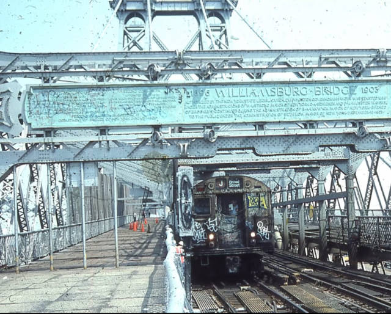
J Train on the Williamsburg Bridge, 1980s
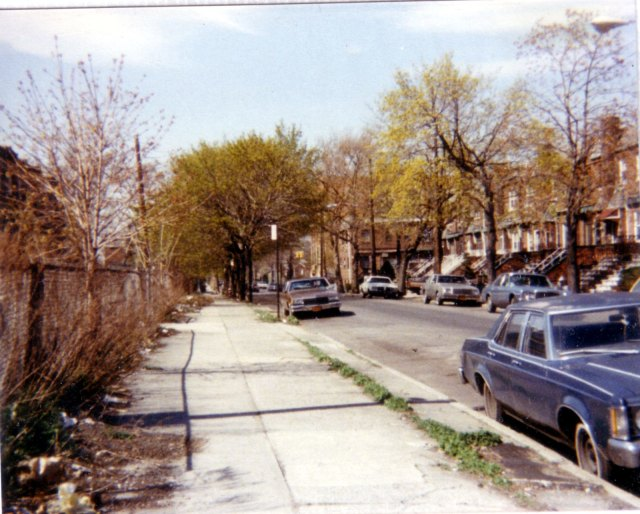
18th St near Ave Y, Sheepshead Bay, Brooklyn, 1983
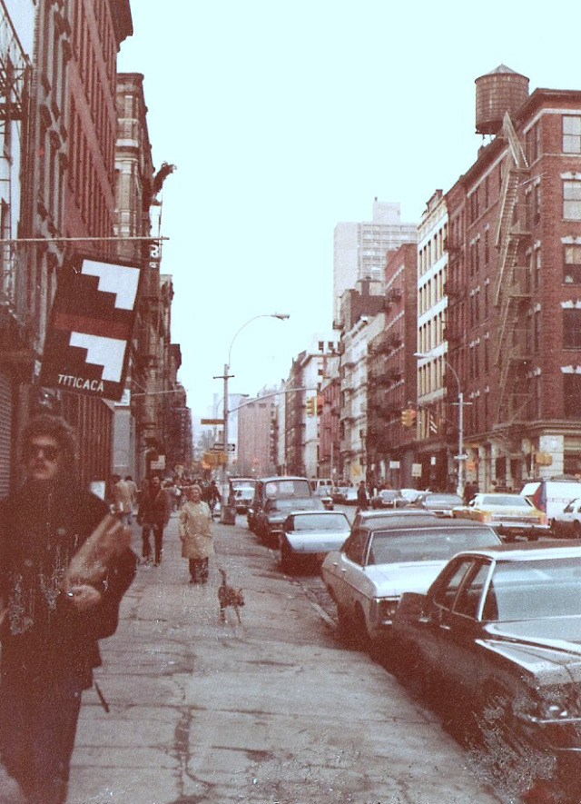
West Broadway and Spring Street, 1978